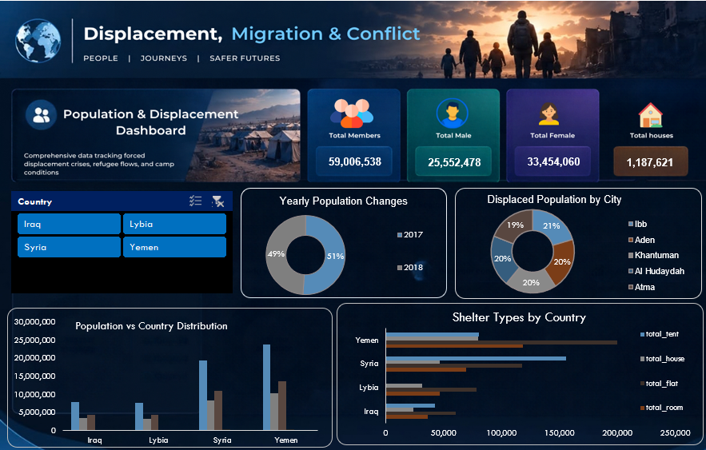
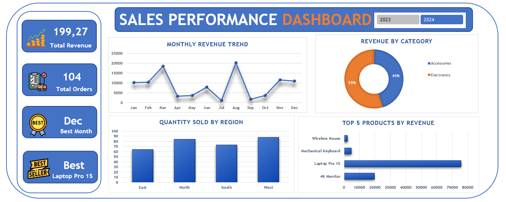

Diabetes Risk Analysis
Built an end-to-end analysis pipeline to examine health indicators, clean missing and outlier data, and visualize diabetes risk factors.
DATA ANALYSIS / ALEXANDRIA, EGYPT
Junior Data Analyst
I clean, explore, and visualize data with Python, SQL Server, Excel, and Power BI to support clear, data-driven decisions.
DATA & ANALYTICS / 01
I build end-to-end analytical workflows that turn complex datasets into actionable, data-driven insights.
Using Python, SQL, Excel, and Power BI, I clean, analyze, and visualize data to solve complex problems and drive clear business decisions.
SELECTED PROJECTS / 02
Built an end-to-end analysis pipeline to examine health indicators, clean missing and outlier data, and visualize diabetes risk factors.

Created a data-cleaning and monitoring dashboard for camp population records, using SQL to aggregate and match tables and Excel Pivot Tables and Slicers to track population and resources.

Created an interactive Sales Performance Dashboard as part of the Digital Egypt Pioneers Initiative (DEPI). Transformed raw sales data into clean, insightful visual metrics to drive better business decisions, featuring dynamic charts, monthly revenue trends, category breakdowns, and seamless Slicers for 2023 & 2024 filtering.
No projects in this category yet. Try another filter.
TECHNICAL & CORE SKILLS / 03
Analytical methods and strengths developed through practical project work.
Technologies for analysis, modeling, and reporting.
CERTIFICATIONS / 04
BMI
August 2026Oracle
August 2026Institute of Graduate Studies and Research, Alexandria University
December 2024CONTACT / 05
Open to data analysis roles and research collaborations.